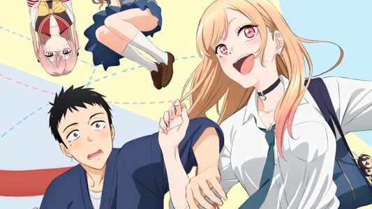

My Dress-Up Darling
Romance
Slice of life
High school student Wakana Gojou spends his days perfecting the art of making hina dolls, hoping to eventually reach his grandfather's level of expertise. While his fellow teenagers busy themselves with pop culture, Gojou finds bliss in sewing clothes for his dolls.